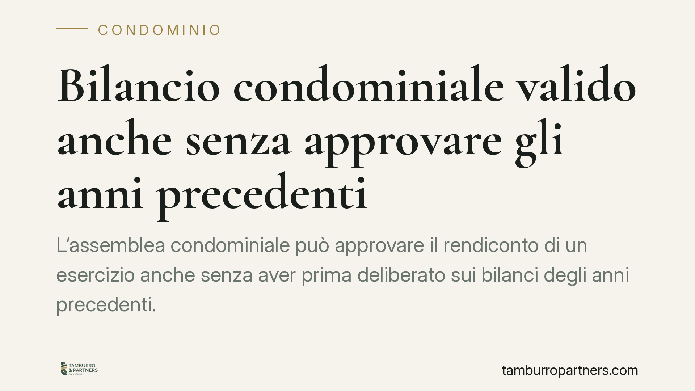

Bilancio condominiale valido anche senza approvare gli anni precedenti
L'assemblea condominiale può approvare il rendiconto di un esercizio anche senza aver prima deliberato sui bilanci degli anni precedenti. Lo ha stabilito il Tribunale di Napoli con la sentenza 5036/2025. Il principio incide sui tempi di gestione e sulle impugnazioni: chi contesta deve impugnare la singola delibera, non invocare l'omessa approvazione dei conti pregressi.

Il caso
Un condomino aveva impugnato la delibera di approvazione del bilancio consuntivo sostenendo un vizio di procedura: l'assemblea non poteva, a suo dire, approvare i conti dell'anno senza aver prima approvato i rendiconti degli esercizi precedenti rimasti "in sospeso".
La Sezione VI Civile del Tribunale di Napoli (sent. 5036 del 21 maggio 2025, giudice De Luca) ha respinto la tesi. L'approvazione del consuntivo di ciascun esercizio è un atto autonomo: non esiste un vincolo di sequenza che imponga di sanare prima i bilanci pregressi.
Inquadramento normativo
Il rendiconto condominiale è disciplinato dall'art. 1130-bis del Codice civile, introdotto dalla riforma del 2012 (legge 220/2012). La norma stabilisce il contenuto del rendiconto — registro di contabilità, riepilogo finanziario e nota sintetica — e il diritto dei condomini di prenderne visione.
Nessuna disposizione del Codice civile condiziona l'approvazione del bilancio di un esercizio alla preventiva approvazione di quelli anteriori. Ogni rendiconto fotografa la gestione di un periodo determinato e si chiude su sé stesso.
Il Tribunale individua un'unica eccezione: il regolamento condominiale di natura contrattuale — cioè accettato da tutti i condomini o richiamato negli atti di acquisto — può introdurre un vincolo di sequenza. In assenza di una clausola espressa in tal senso, la libertà dell'assemblea resta piena.
Perché la distinzione tra regolamento "assembleare" e "contrattuale" conta
Il regolamento assembleare, approvato a maggioranza, disciplina l'uso delle parti comuni ma non può comprimere i diritti individuali dei condomini né imporre vincoli procedurali così stringenti. Il regolamento contrattuale, invece, nasce dall'accordo di tutti ed è l'unico che può legittimamente stabilire un ordine obbligatorio di approvazione.
Tradotto: se nel vostro condominio esiste un simile divieto, deve risultare da una clausola contrattuale chiara. Un uso o una prassi non bastano.
Implicazioni pratiche
Per l'amministratore, la pronuncia conferma che la gestione non si paralizza quando restano aperti contenziosi o ritardi sui bilanci passati. Il consuntivo dell'anno in corso può essere portato in assemblea e approvato, consentendo di procedere con i riparti e la riscossione delle quote.
Per i condomini che intendono contestare, cambia la strategia. Non si può ottenere l'annullamento della delibera limitandosi a eccepire che i conti degli anni precedenti non sono stati approvati. Occorre individuare un vizio proprio della singola delibera impugnata: errori contabili, voci non giustificate, difetto di convocazione, violazione dei quorum.
Resta fermo che i bilanci pregressi non approvati non diventano "intoccabili": potranno essere sottoposti all'assemblea in un secondo momento e, se del caso, contestati autonomamente. L'autonomia degli esercizi vale in entrambe le direzioni.
Il profilo delle impugnazioni
L'impugnazione delle delibere assembleari segue l'art. 1137 del Codice civile: il termine è di trenta giorni, che decorrono dalla delibera per i presenti dissenzienti o astenuti, e dalla comunicazione del verbale per gli assenti. La pronuncia napoletana ricorda indirettamente quanto sia importante centrare il vizio corretto: un motivo di impugnazione infondato — come l'omessa approvazione dei conti pregressi, in assenza di clausola contrattuale — espone il condomino al rigetto e alle spese di lite.
Cosa fare in concreto
- Verificate il regolamento condominiale: controllate se esiste una clausola di natura contrattuale che impone un ordine di approvazione dei bilanci. Senza questa clausola, il vincolo non opera.
- Distinguete il tipo di regolamento: accertate se la disposizione rilevante è contrattuale (accettata da tutti) o solo assembleare. La differenza è decisiva.
- Concentrate l'impugnazione sui vizi propri della delibera: prima di contestare, individuate errori contabili, difetti di convocazione o violazioni di quorum riferiti alla singola approvazione.
- Rispettate il termine di trenta giorni: l'azione ex art. 1137 c.c. è soggetta a decadenza. Calcolate con precisione la decorrenza.
- Documentate le osservazioni in assemblea: fate verbalizzare rilievi e dissenso; rafforza la posizione in un eventuale giudizio.
La sentenza non introduce un principio rivoluzionario, ma consolida un criterio di buon senso gestionale: ogni esercizio vive di vita propria, salvo che i condomini abbiano scelto, per contratto, di legarli tra loro.
Ogni condominio ha una storia a sé.
Se gestisci un'amministrazione e vuoi un confronto su una specifica questione condominiale, scrivi allo studio. Ti rispondiamo entro un giorno lavorativo.